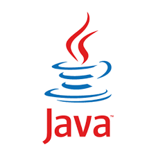
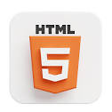
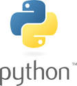
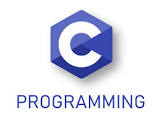
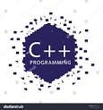
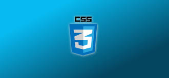
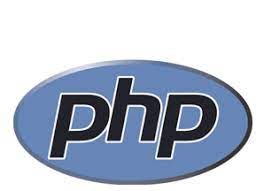

LANGUAGES








| SUBJECT | IMAGE | LINK |
|---|---|---|
| JavaScript is a high-level, often just-in-time compiled language that conforms to the ECMAScript standard.[10] It has dynamic typing, prototype-based object-orientation, and first-class functions. It is multi-paradigm, supporting event-driven, functional, and imperative programming styles. It has application programming interfaces (APIs) for working with text, dates, regular expressions, standard data structures, and the Document Object Model (DOM). |
|
Click here for more information about JAVASCRIPT |
| Indonesia's capital city, Jakarta, is on Java's northwestern coast. Many of the best known events in Indonesian history took place on Java. It was the centre of powerful Hindu-Buddhist empires, the Islamic sultanates, and the core of the colonial Dutch East Indies. Java was also the center of the Indonesian struggle for independence during the 1930s and 1940s. Java dominates Indonesia politically, economically and culturally. Four of Indonesia's eight UNESCO world heritage sites are located in Java: Ujung Kulon National Park, Borobudur Temple, Prambanan Temple, and Sangiran Early Man Site. |
 |
Click here for more information about JAVA |
| The HyperText Markup Language or HTML is the standard markup language for documents designed to be displayed in a web browser. It can be assisted by technologies such as Cascading Style Sheets (CSS) and scripting languages such as JavaScript.Web browsers receive HTML documents from a web server or from local storage and render the documents into multimedia web pages. HTML describes the structure of a web page semantically and originally included cues for the appearance of the document. |
 |
Click here for more information about HTML |
| Pyton was a Norwegian comic book series which was produced by the company Gevion, and afterwards Bladkompaniet, between the years 1986 until 1996. An anthology magazine with no major main character, its style of humor focused mostly on satiric and toilet humour, including sexual, toilet, and farting jokes. Most of Pyton's material was produced by the magazine's own staff, but a handful of foreign comics also appeared in the magazine, including Gary Larson's The Far Side, and the German comic Werner.The name is Norwegian for python, a term which in Scandinavia also has gained a slang adjective meaning of "disgusting" or "sick". The magazine also adopted a python snake as mascot (after discarding their original polar bear), who occasionally featured in his own comics. |
 |
Click here for more information about PYTHON |
| "C" comes from the same letter as "G". The Semites named it gimel. The sign is possibly adapted from an Egyptian hieroglyph for a staff sling, which may have been the meaning of the name gimel. Another possibility is that it depicted a camel, the Semitic name for which was gamal. Barry B. Powell, a specialist in the history of writing, states "It is hard to imagine how gimel = "camel" can be derived from the picture of a camel |
 |
Click here for more information about C |
| C++ (pronounced "C plus plus") is a general-purpose programming language created by Danish computer scientist Bjarne Stroustrup as an extension of the C programming language, or "C with Classes". The language has expanded significantly over time, and modern C++ now has object-oriented, generic, and functional features in addition to facilities for low-level memory manipulation. It is almost always implemented as a compiled language, and many vendors provide C++ compilers, including the Free Software Foundation, LLVM, Microsoft, Intel, Embarcadero, Oracle, and IBM, so it is available on many platforms. |
 |
Click here for more information about C++ |
| Cascading Style Sheets (CSS) is a style sheet language used for describing the presentation of a document written in a markup language such as HTML or XML (including XML dialects such as SVG, MathML or XHTML).CSS is a cornerstone technology of the World Wide Web, alongside HTML and JavaScript.CSS is designed to enable the separation of presentation and content, including layout, colors, and fonts.This separation can improve content accessibility; provide more flexibility and control in the specification of presentation characteristics; enable multiple web pages to share formatting by specifying the relevant CSS in a separate .css file, which reduces complexity and repetition in the structural content; and enable the .css file to be cached to improve the page load speed between the pages that share the file and its formatting. |
 |
Click here for more information about CSS |
| PHP is a general-purpose scripting language geared toward web development.[5] It was originally created by Danish-Canadian programmer Rasmus Lerdorf in 1994.[6] The PHP reference implementation is now produced by The PHP Group.[7] PHP originally stood for Personal Home Page,[8] but it now stands for the recursive initialism PHP: Hypertext Preprocessor. |
 |
Click here for more information about PHP |